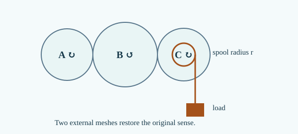

Original author-exposed candidate teaching; not an independently qualified textbook or authentic exam question. Worked-example tiers are not approved demand bands.
1. Observe and establish a reference
A rider on a merry-go-round has a constant speedometer reading but changes direction continuously.
Prerequisite bridge: PH01-M01; PH01-M02; PH01-M03; PH01-M04. Use a fixed reference axis and consistent SI units unless stated otherwise.
2. Build and justify the scientific model
A circular path differs from a straight line because direction changes even when the speed is fixed. Take a circle with radius r, centre at the origin and east/north axes. A full revolution covers circumference 2πr; dividing by the period T gives constant speed. For a fraction f of a revolution, arc length is f(2πr), but displacement is the straight vector from initial to final point. Velocity at every point is tangent, perpendicular to the radius; for counterclockwise travel the tangent turns counterclockwise as the radius does. After one complete revolution the vector displacement and average velocity are zero, though the distance and speed remain positive. The changing velocity direction means acceleration exists. To see the direction of acceleration, draw two equal-length tangent velocity arrows at neighbouring points, with their tails together. Their vector difference points approximately toward the centre at the midpoint of the short arc. As the time interval shrinks, this direction approaches the inward radius at the current point; quantitative centripetal acceleration and forces are enrichment or PH02 material, not required to solve these tasks.
For a uniform circle, speed=2πr/T; after fraction f of a lap the arc length is 2πrf. Vector displacement is (x_f−x_i,y_f−y_i), and vector average velocity is that vector divided by elapsed time. Tangential velocity is perpendicular to the radius.
Derivation and reasoning
- Compute the fraction of a revolution from elapsed time and period. Constant speed around a fixed circumference makes elapsed fraction equal arc fraction.
- Find the endpoint coordinates and subtract the initial vector. Displacement depends on endpoints, not the path.
- Divide arc length and vector displacement by elapsed time separately; identify tangent direction. Speed and velocity encode different physical quantities.
3. Worked examples
Problem: A runner circles radius 7 m once in 14 s.
Reasoning: Distance 14π m, speed π m/s, displacement zero.
Independent check: Average velocity zero after a complete lap.
Problem: A rider starts east at (4,0), travels counterclockwise one quarter lap in 2 s.
Reasoning: Endpoint (0,4); displacement (−4,+4) m; average velocity (−2,+2) m/s. Speed π m/s.
Independent check: Quarter arc=2π m; tangent at start points north.
Problem: A particle of radius 3 m starts at north and completes 3/4 counterclockwise lap in 9 s.
Reasoning: Endpoint east (3,0); distance 4.5π m; displacement (+3,−3) m; average velocity (1/3,−1/3) m/s. T=12 s.
Independent check: At the east endpoint velocity points north; vector displacement is not the arc.
4. Model limits and misconception repair
- Whole-revolution displacement is zero but speed is not.
- Average velocity is the vector displacement divided by elapsed time; not the average of speed magnitudes.
- Quantitative centripetal acceleration/force is an extension; no force law is needed here.
Diagnostic: Compare the velocity arrows at opposite points of a circular path.
Repair: Velocity includes direction. Opposite tangents differ even if their lengths match.
5. Test your understanding
Radius 6 m, T=12 s, start east and move counterclockwise for 6 s. Find distance, displacement and average velocity.
Reveal textbook explanation
Distance 6π m; displacement (−12,0) m; average velocity (−2,0) m/s. Half revolution ends at west; tangent direction reverses.
Existing Core2 question preparation
Angular fraction, period and frequency
For a uniform circle, angle θ in degrees is fraction θ/360 of a lap. If that fraction takes Δt, T=360Δt/θ, f=1/T and v=2πrf. Radius is half the diameter. Example: diameter 20 cm, quarter lap in 0.5 s gives r=0.10 m, T=2 s, f=0.5 Hz and v=0.10π m/s. Check: quarter arc 0.05π m equals speed multiplied by time.
These are links to existing question identities, not reproduced original questions or approved demand classifications.
- NSEJS 2021 Q22 — Gear ratios and rotary-to-linear displacement (cross-topic prerequisite)
- NSEJS 2024 Q37 — Angular fraction, period and frequency (PH01 preparation)
Complete PH01 question-to-construction map · source and academic HOLD.
R4.2 · Source-led advanced construction
No slip means N_A f_A+N_B f_B=0 using signed clockwise frequencies. Every external mesh reverses direction. A coaxial spool shares its gear's frequency, not the gear rim's linear speed. Example: 12 teeth driving 24 at 4 rev/s produces −2 rev/s at driven wheel. A 0.05 m spool moves string at 2π(.05)×2=.2π m/s; sign depends on winding. Opposite rotation stages can cancel height change but add to path.

R4.3 · APPLY construction · D3.3
For uniform rotation, f=n/Δt, T=1/f, v=2πrf and arc=2πrn. Convert angular degrees to turns by dividing by 360. For radius 0.12 m and 270° in 0.5 s, n=.75, f=1.5 Hz, T=2/3 s, v=.36π m/s and arc=.18π m; the remaining three-quarter turn gives endpoint chord .12√2 m, not the arc.
Independent practice: Open the protected APPLY instance before comparing your reasoning.
R4.4 · EXPLAIN — causal chain · D3.2
At constant nonzero circular speed, a rim marker's tangent rotates. Equal magnitudes do not make successive vectors equal: subtract nearby tangents to obtain a small inward-directed change (toward the midpoint radius, then toward the instantaneous centre in the small-time limit). Since acceleration is the rate of vector change, it is nonzero despite constant speed. After a complete revolution the velocity vector returns to its initial value, so its full-lap average acceleration is zero. A straight constant-velocity comparison isolates direction change as the reason.
Independent practice: Open the revised protected D3.2 transfer instance before comparing your reasoning.
2025 Q41 · MODEL transfer · D4.4 candidate
On a closed track of circumference L, two signed unwrapped arc coordinates sA,sB denote the same point exactly when sA−sB=kL for integer k. Keep each velocity regime and its time domain. Worked anchor: L=40 m, A starts at 0 with +3 m/s, B at 10 with −1 m/s. Relative coordinate −10+4t reaches 0 at 2.5 s and 40 at 12.5 s. If a direction switch occurs, carry the relative coordinate continuously to the switch and search multiples separately. A first positive contact may occur at k≠0.
Independent check: Subtract times: 10 s gives relative travel 40 m, one circumference.
Open the protected fresh transfer · Publisher locator (not a Core2 record)
6. Apply your reasoning in M08 Core1B
Three fresh protected INSTANCE tasks cover MODEL, REPRESENT and SYNTHESIZE. Proposed D3 labels remain unqualified.
Latest candidate: 7 protected INSTANCE tasks; R4.6 and earlier saved attempts remain separate.
Open M08 R4.6 · D3/D4 practiceHistorical R4.6: 7 tasks; previous attempts stay accessible.
Open M08 R4.5 · D3/D4 practiceHistorical R4.5: 6 tasks; previous attempts stay accessible.
Open M08 R4.4 · D3/D4 practiceHistorical R4.4: 6 tasks; saved attempts remain accessible.
Open M08 R4.3 · D3/D4 practiceHistorical R4.3: 5 tasks; earlier saved attempts remain accessible.
Open M08 R4.2 · D3/D4 practiceHistorical R4.2: four protected tasks; earlier saved attempts remain accessible here.
Open M08 Core1B →Previous Core1A · M07Integrated PH01 MAINScience and source custody
Original instructional examples and diagram; NO_QUALIFIED_SOURCE_YET. Independent scientific/QRT/B1–B7 and release gates HOLD.